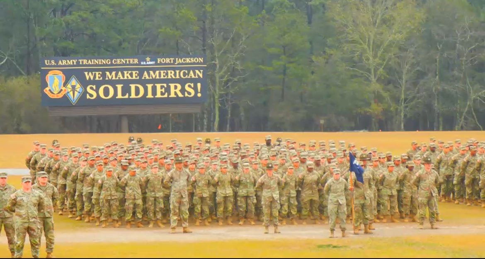

Military Service
Military training strengthened my discipline, resilience, teamwork, attention to detail, and commitment to maintaining professional standards.
About Me
My background combines military intelligence, security operations, leadership, technology, higher education, physical discipline, and a strong interest in public service.

My Background
My name is Carlos Gomez, and I am based in Austin, Texas. I am currently studying Computing Applications at Texas Tech University while serving in the U.S. Army Reserve as an Intelligence Analyst.
Completing Basic Combat Training was an important point in my development. It required discipline, consistency, teamwork, adaptability, and the willingness to continue moving forward when physically or mentally challenged. Those lessons continue to influence how I approach school, work, fitness, and long-term goals.
My professional path has also included security operations and team leadership. Those experiences taught me how to observe an environment carefully, document incidents, communicate with different types of people, manage daily priorities, and remain professional when situations become difficult or unpredictable.
Military intelligence strengthened my interest in analysis and information. I enjoy work that involves organizing details, identifying what matters, recognizing patterns, and communicating useful conclusions to people responsible for making decisions.
My Computing Applications education is helping me connect that analytical interest with technology. I want to continue developing skills in information systems, data analysis, digital organization, web development, and technology-based decision support.
Personal Development
Military training strengthened my discipline, resilience, teamwork, attention to detail, and commitment to maintaining professional standards.
My education is building a technical foundation in computing, information organization, web development, data, and practical technology applications.
Security operations and team leadership helped me develop communication, accountability, documentation, workflow management, and problem-solving skills.
One of my long-term goals is to become an Army officer and take on greater responsibility for people, planning, decisions, and mission accomplishment.
Education & Direction
Bachelor's Education
Developing practical skills involving computing, information organization, digital systems, web development, and technology applications.
Intelligence Education
Supporting my military background through education focused on intelligence processes, analysis, reporting, and decision support.
Career Goal
Working toward opportunities involving intelligence, data, public safety, investigative analysis, technology, and future Army leadership.